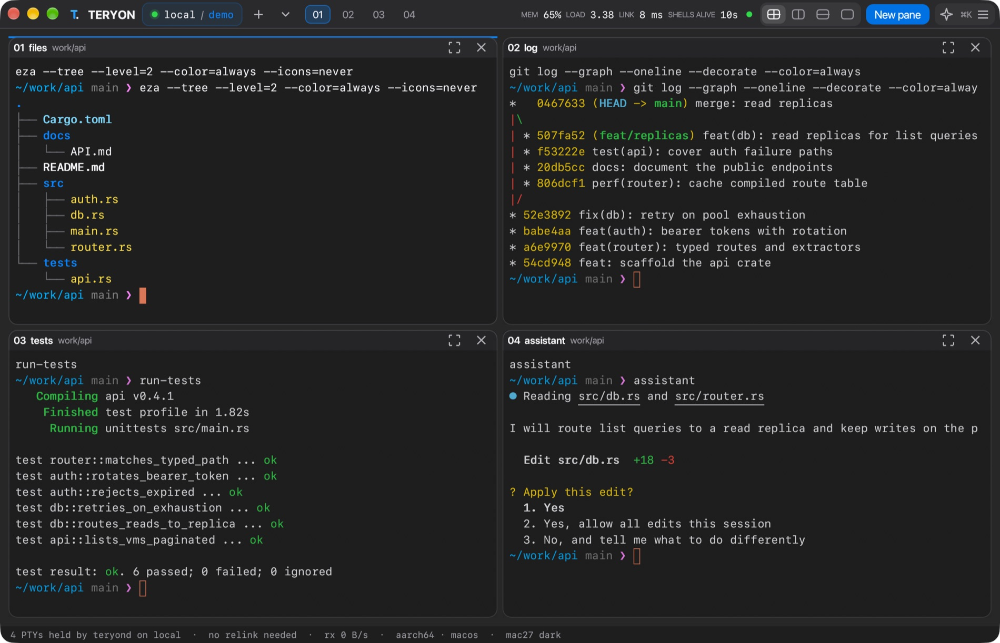
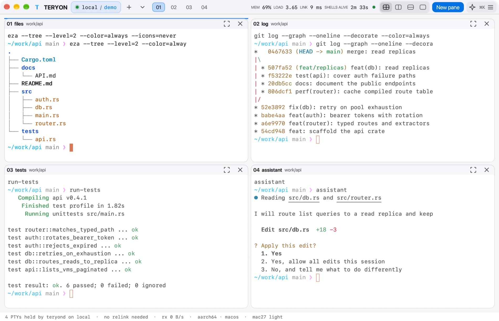
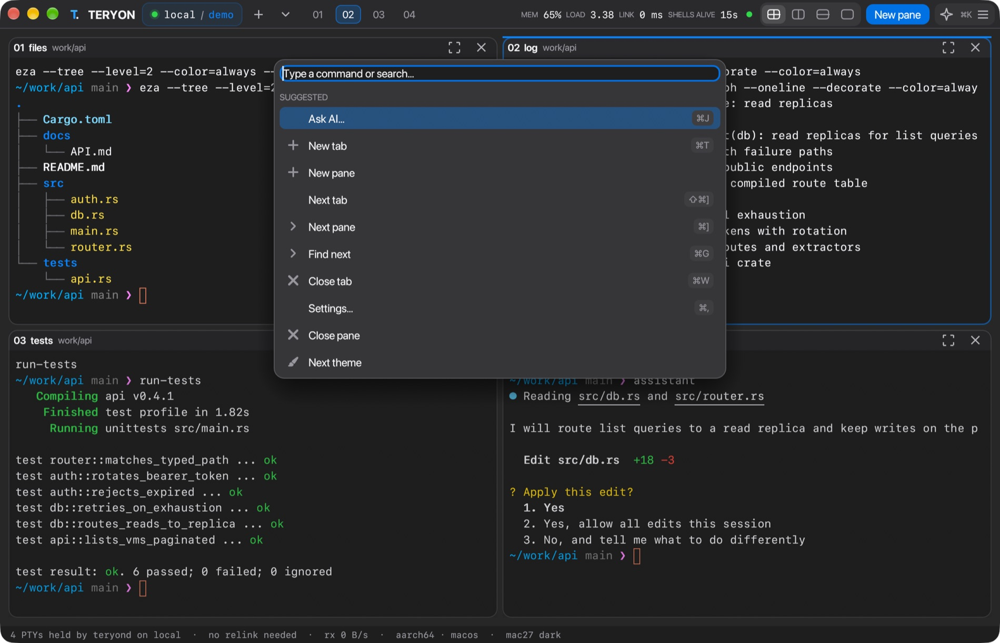
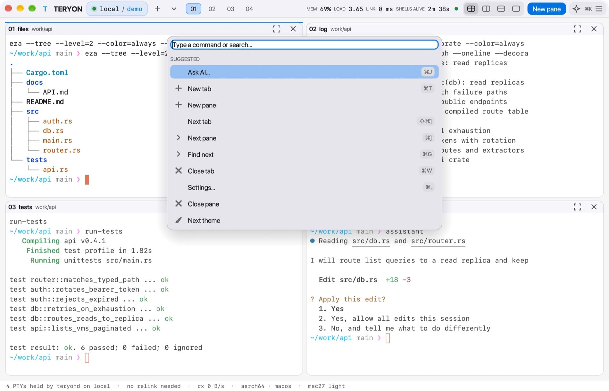
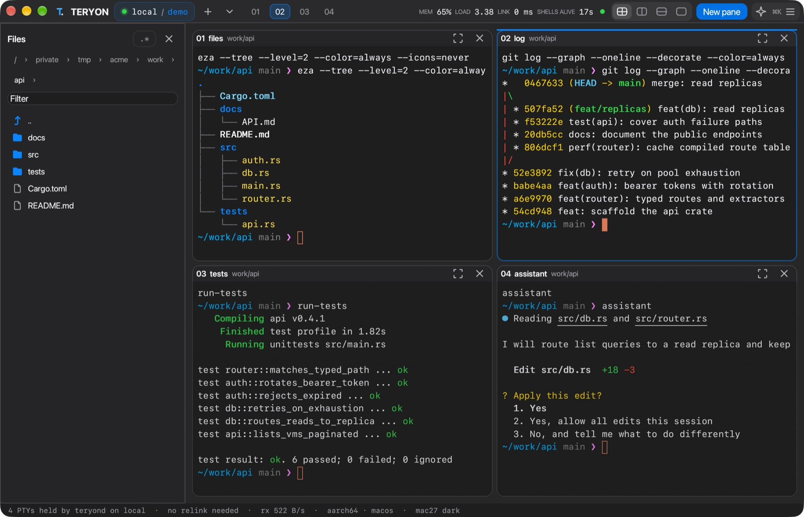
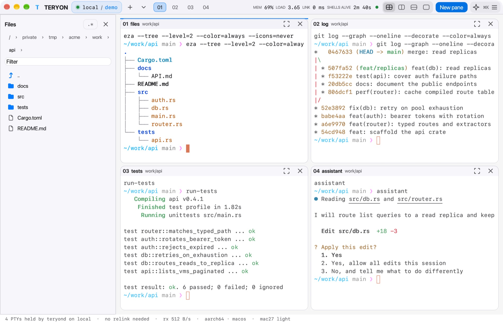

Shells that outlive your connection. Close the lid, switch networks, come back tomorrow, and everything is exactly where you left it.


A small per-user service on your Mac mini or Linux host owns the terminals. Your laptop connects over the OpenSSH you already trust. No new ports, no new accounts.
Disconnect, sleep, or quit the client. Reconnect to the same live shells.
Ports, jump hosts, agents and aliases stay in your existing OpenSSH setup.
Colors 0–15 follow the theme, so ls, git and editors look right.
The daemon owns the terminals, not your connection. Try it.
4 shells running. A build is at 63%.
A GPU window over the same persistent shells. Drag splits, navigate by keyboard, search scrollback, and open the command palette for the rest.


TERYON watches each pane's foreground command and shows a status chip for Claude Code, Codex, Gemini, aider, Cursor and OpenCode.
Start an agent on its own Git branch, so its edits stay out of your checkout.
teryon sandbox -- claude limits writes to the repository and hides ~/.ssh.
teryon mcp gives MCP clients durable panes, local or over SSH. Reads are always on.
# give Claude Code a terminal that survives $ claude mcp add teryon -- teryon mcp --allow-write # run an agent where it can only write to this repository $ teryon sandbox -- claude
A guard against mistakes and leaked credentials, not a boundary against a hostile program.
A sidebar follows cd, previews files with Quick Look (code is syntax-colored, with find), and works the same on a remote host over your SSH connection. Nothing is deleted: items go to the Trash.


When the link is down you get the real reason and the next step, not a spinner.
● SSH refused your key · mini.local ACTION NEEDED Check ssh -o BatchMode=yes mini true in a terminal and that ssh-add -l lists your key. ssh said: user@mini: Permission denied (publickey). Your shells keep running on the host and reconnect as soon as this works.
Over SSH the app asks for a scroll plus the rows that changed, checksummed, with an automatic full resync. In one scrolling-output test the screen bytes were about 17× smaller and the whole reply stream about 7×.
Another device holding the seat on a half-dead link? One command takes it over; the old controller keeps watching, read-only.
The 17× and 7× come from one test, not a benchmark against other tools; see the test report.
Mac27, Apple, Tokyo Night, Catppuccin, Dracula, Nord and more. teryon themes --export wezterm NAME gives your terminal the same palette.
Press Ctrl+Space then ? for help. Ctrl+Space → d detaches; your shells keep running.